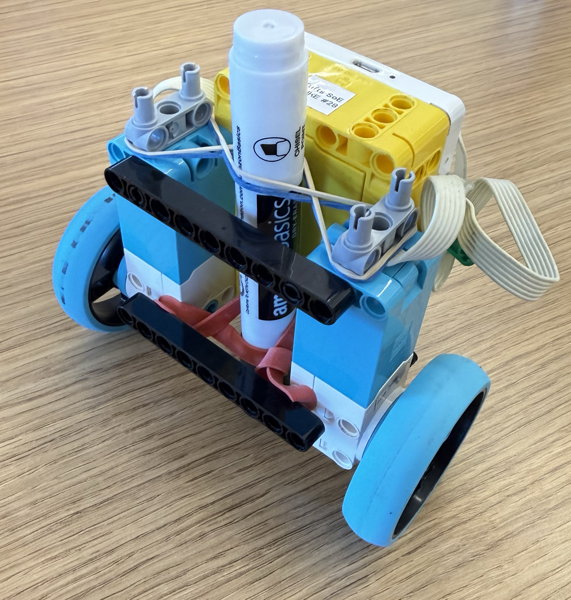
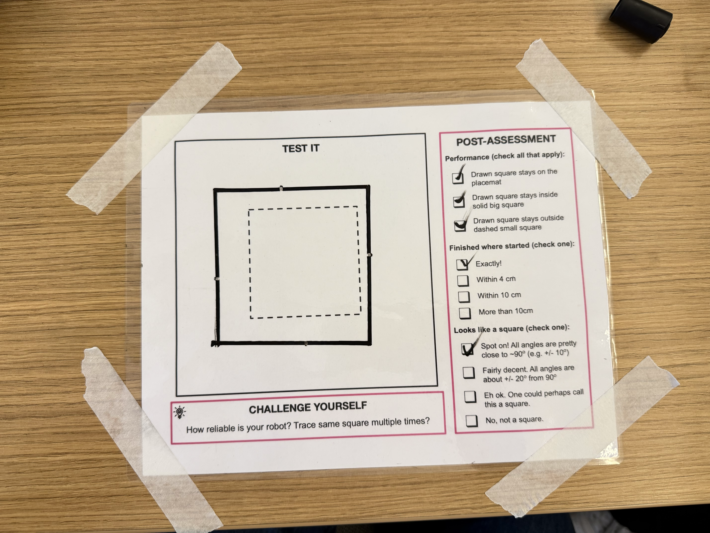

My robot is designed to draw a square by using two wheels to control its movement and a marker to trace the path. The robot moves forward for a set amount of time and then turns 90 degrees before repeating the process four times. Ideally, this allows the robot to create four straight sides and four 90-degree corners, forming a square.
During my first attempts, the robot was not able to create accurate 90-degree angles. I realized that the marker was not properly aligned with the circle of rotation of the wheels. Because the marker was offset from the robot’s rotation point, the marker would move in a curved path when the robot turned, causing the corners of the square to be inaccurate.
To fix this problem, I wrapped a rubber band around the bottom of the marker and used a bar to hold it securely in place. This kept the marker from shifting and maintained its alignment with the robot’s wheel rotation. By keeping the marker aligned with the circle of rotation, the robot was able to turn more accurately and create much closer to 90-degree angles.
In my one attempt in class the robot successfully drew the square shown above. However, when it finished the fourth side, its ending position was slightly farther than the original starting point.